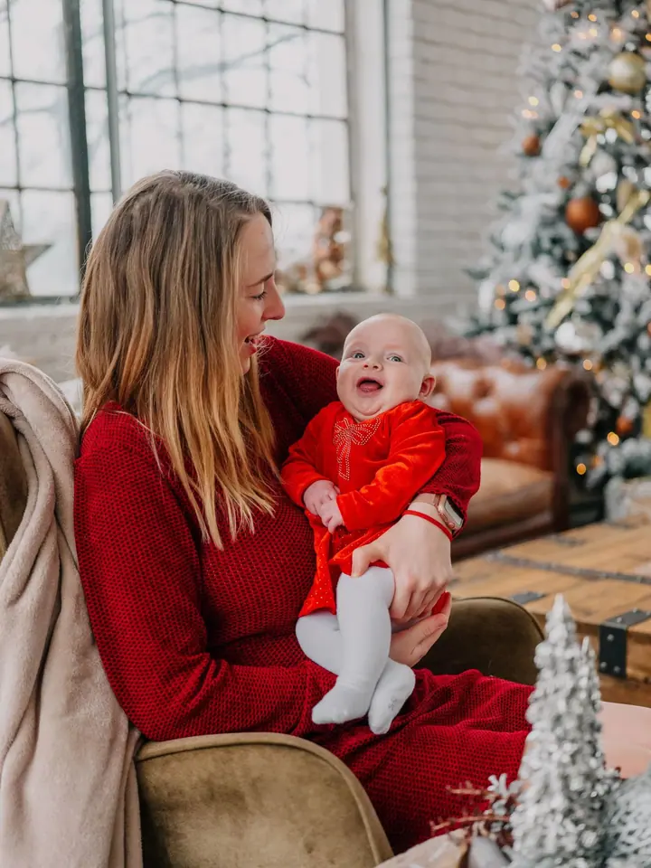
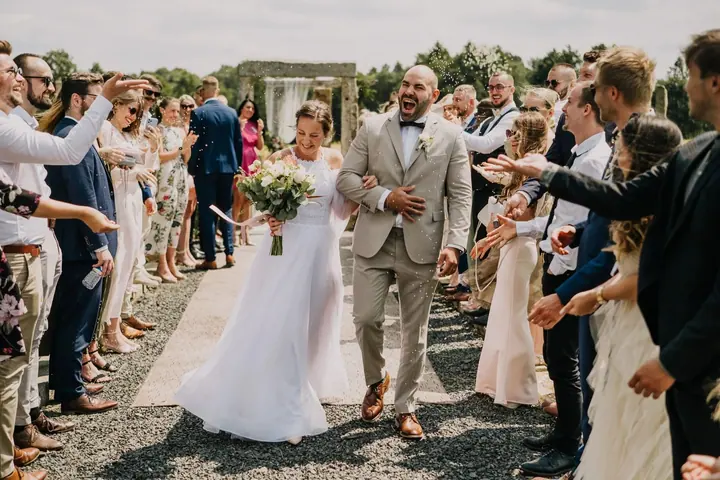

jedna
Svatby
Autentické, přirozené a do teplých tónů laděné svatební fotky. Nic nerežíruji, fotím hlavně za denního světla a snažím se, abyste si celý den v klidu užili.

Fotografka svateb, párů a rodin · Mělník, Praha, Litomyšl

Jmenuji se Lenka Vaníčková a fotím svatby, páry a rodiny na Mělníku, v Praze a v Litomyšli. Co mě nejvíc vystihuje? Smích, emoce, hřejivé barvy, světlé tóny a nadšení pro každou prkotinku. Ráda ale přijedu kamkoliv, kam mě pozvete.
Více o mně
Co fotím
jedna
Autentické, přirozené a do teplých tónů laděné svatební fotky. Nic nerežíruji, fotím hlavně za denního světla a snažím se, abyste si celý den v klidu užili.
dvě
Fotky vás dvou, které budou mít s každým dalším rokem větší cenu. Klidně při východu slunce na kopci nebo u ledového jezera.
tři
Fotím venku, v ateliéru nebo u vás doma a dávám přednost přirozenému lifestylovému focení. Každý rok vypisuji i termíny vánočního focení.
Fotím maturitní plesy, oslavy a další akce. Na přání zajistím i fotokoutek s okamžitým tiskem.

Nejsem režisérka, nechávám věci plynout.


Za objektivem
Narodila jsem se v Jeseníkách, nějakou dobu jsem žila přímo v Praze a teď bydlím na Mělníku. Často jezdím do Litomyšle, kde dlouhé roky spolupracuji se Zámeckým návrším. Svatby jsem začala fotit ve 22 letech. Podle portálu Mywed patřím mezi 30 nejlepších svatebních a 15 nejlepších párových fotografů v České republice.
Váš příběh nechci přizpůsobovat nějaké šabloně. Nejsem režisérka, nebudu vyhánět družičky z příprav ani nutit ženicha, aby se oblékal desetkrát. Když to jde, nepoužívám blesk a spoléhám na přirozené světlo. Mým úkolem je, abyste se před foťákem cítili dobře a celý den si v klidu užili.
Mám ráda dobrodružství, za což asi trochu může dospívání ve skautském oddíle. Baví mě turistika a vodáctví a volné chvilky trávím na procházkách se psem. Kromě focení občas pracuji jako filmová skriptka a produkční a spravuji sociální sítě pro Fujifilm CZ.
Lenka
Pošlete mi termín, místo a pár slov o tom, co si představujete. Ozvu se vám a společně najdeme vhodnou variantu.
Před svatbou se potkáme, probereme harmonogram a místa a v klidu se poznáme. Ve den D už se pak budete cítit jako s kamarádkou.
Fotím přirozeně a bez režie, pokud to jde, tak jen za denního světla. Když budete potřebovat, pomůžu vám s pózováním, jinak nechám věci plynout.
Fotky pečlivě vyberu a upravím do teplých, světlých tónů. Pak vám je předám, ať se k nim můžete vracet.
Portfolio
Fotografie jsou ilustrační
Otázky
Ano. Nejčastěji fotím v těchto třech místech, ale ráda přijedu kamkoliv po Česku i do zahraničí.
Párové focení vychází od 2 500 do 8 500 Kč, rodinné začíná na 2 000 Kč a svatební balíčky jsou od 8 000 do 31 000 Kč. Přesnou nabídku vám ráda připravím podle toho, co budete chtít.
Venku, v ateliéru nebo u vás doma, záleží jen na vás. Nejradši fotím přirozeně a lifestylově, bez strnulého pózování.
Svým párům zdarma půjčuji Instax, kterým si hosté fotí sami sebe a fotky můžou rovnou lepit do knihy hostů. Pokud chcete radši klasický fotokoutek, nabízím i variantu s okamžitým tiskem.